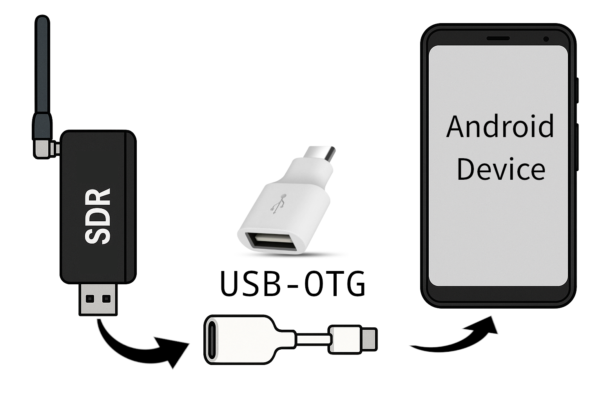

Installation & Setup
This sections explains how to install the RF Analyzer app and connect a source for RF signals. Details about the configuration of the SDR can be found in the section SDR Source.
Installation
Installing the App
The app can be downloaded via the Google Play Store. Use the following link:
https://play.google.com/store/apps/details?id=com.mantz_it.rfanalyzer

You can try all features for free with a 7-day trial and up to 60 minutes of analyzer usage.
If you like it, a one-time in-app purchase unlocks the full version - no subscriptions, no accounts, no ads.
This app is a hobby project, built with passion and countless hours of work. Supporting the app helps me continue developing and improving it. Thank you! 🙏
Installing the SDR driver (app)
This is only necessary for the RTL-SDR
RF Analyzer uses the free RTL-SDR driver app for Android to interface with the RTL-SDR device.
The driver can be installed via Google Play like any other app. After the installation, nothing more has to be done. It is not necessary to start the driver app manually. RF Analyzer will run the driver app in the background as soon as the sampling is started.
The driver is not needed for the HackRF because RF Analyzer uses a build-in driver.
Connecting SDR Hardware
HackRF & RTL-SDR via USB
The HackRF and RTL-SDR devices are connected via USB to your Android device using a USB OTG adapter. You might have received such an adapter with your phone as it is usually used to transfer data from you old phone to the new one.

When connecting the SDR, the RTL-SDR driver app immediatly shows a dialog requesting permissions to the device.
The permission request of the RTL-SDR driver also appears when connecting a HackRF. It can be accepted or dismissed. RF Analyzer will show its own permission dialog when starting the SDR
RF Analyzer will automatically select RTL-SDR or HackRF as source type when a respective device is plugged in and the app is currently open.
RTL-SDR via TCP
The RTL-SDR can be setup on a computer and accessed/operated via the network.
On you host computer, execute rtl_tcp to start a SDR server. The following
command line starts the server on TCP port 4242 assuming the IP address of your
host is 192.168.0.42:
rtl_tcp -a 192.168.0.42 -p 4242
Select RTL-SDR in the source tab dropdown menu in the RF Analyzer app. Before starting the analyzer, scroll down and enable External Server. Enter the IP address and port:
Afterwards, start the analyzer by pressing the Play Button.
Firewall might block access to the server
If your host computer is behind a firewall or has a local firewall
installed, RF Analyzer might not be able to connect to the port. In this
case, add an exception to the firewall to allow incoming traffic to the
port specified in rtl_tcp.
Filesource (Playback recordings and IQ files)
RF Analyzer can playback files that contain captured RF samples in the format
of either RTL-SDR (rtl_sdr) or HackRF (hackrf_transfer -r):
- RTL-SDR: interleaved, 8-bit, unsigned IQ samples
- HackRF: interleaved, 8-bit, signed IQ samples
In both cases, the in-phase component (I) is first, followed by the quadrature component (Q).
Select Filesource in the source tab of RF Analyzer. Either choose Open File to open a file from storage or Recordings to playback a previously recorded caputure.
When selecting a file from storage it is important that the frequency, sample rate and file format (HackRF vs. RTL-SDR) are correctly specified after the file is opened. If these values are wrong, the file will not play correctly. RF Analyzer tries to automatically detect these settings from the imported file name, however, it is not guaranteed that this succeeds. Double check the values if the data is not correctly played.
Start the Analyzer
The Quickstart section briefly explains all necessary steps receive signals with the app. Detailed information about all UI elements can be found in the section User Interface and the following sections (SDR Source, FFT & Waterfall Display, Demodulation, Recording and Settings).